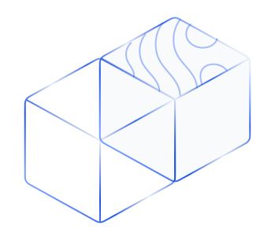
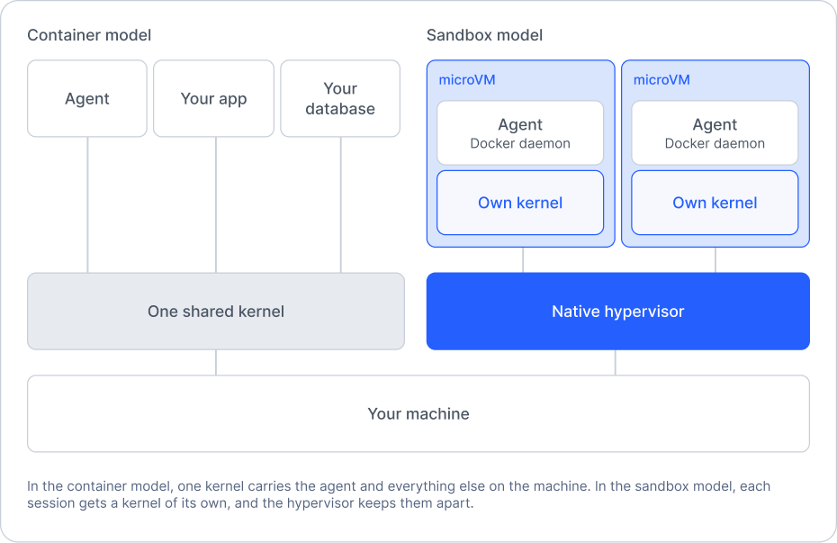

Docker Sandboxes vs. Docker containers
TL;DR
- Container dùng chung kernel của máy; Docker Sandbox là microVM có kernel riêng, ranh giới nằm ở hypervisor.
- Sandbox dành cho phiên agent trên máy dev: tách file, credential và mạng; container vẫn dùng để đóng gói và chạy phần mềm.
- Trong sandbox có Docker daemon riêng nên
docker build/docker composechạy được mà không cần Docker-in-Docker hay mount socket host. - Cài độc lập:
brew install docker/tap/sbx(macOS) hoặcwinget install Docker.sbx(Windows); không cần giấy phép Docker Desktop.
Đây là bản dịch tiếng Việt của trang sản phẩm Docker. Nội dung thuộc về Docker, Inc. Bản dịch phục vụ học tập phi thương mại; mọi quyền đối với bài gốc thuộc về Docker. Ghi công không đồng nghĩa với giấy phép tái sử dụng. Giá, tín dụng ($250) và chính sách thanh toán có thể đổi theo thời điểm trên trang gốc.
Cách đọc: Ở chế độ Song ngữ, rê chuột lên từng đoạn để xem tiếng Việt bên dưới. Trên điện thoại, chạm đoạn để mở/đóng bản dịch; chạm liên kết vẫn mở liên kết. Dùng phím Tab để xem bản dịch, Esc để đóng. Nút nổi góc dưới bên trái chuyển sang Toàn bộ tiếng Việt và ghi nhớ lựa chọn. Khi tắt JavaScript, cả hai ngôn ngữ được hiển thị. Lệnh cài đặt và tên kỹ thuật giữ nguyên tiếng Anh.
Docker Sandboxes vs. Docker containers
Docker Sandboxes so với Docker containers
A container shares the kernel of the machine it runs on. A Docker Sandbox is a microVM with a kernel of its own. Containers package the software your team ships. Sandboxes keep an agent away from your files, your credentials and your network.
Container dùng chung kernel của máy nó chạy trên. Docker Sandbox là một microVM với kernel riêng. Container đóng gói phần mềm đội bạn giao. Sandbox giữ agent cách xa file, credential và mạng của bạn.
Try Sandboxes with $250 credit
No charge today. Billing starts when the credit runs out. Expires in six months.
Hôm nay chưa tính phí. Thanh toán bắt đầu khi hết tín dụng. Hết hạn sau sáu tháng.
CTA links to Docker’s product page; this translation does not process payments.Nút dẫn tới trang sản phẩm Docker; bản dịch này không xử lý thanh toán.

The differences
Những khác biệt
Docker containerBuilt to ship your applicationDocker containerDùng để giao ứng dụng |
Docker SandboxBuilt to keep an agent off your machineDocker SandboxGiữ agent cách xa máy của bạn |
|
|---|---|---|
BoundaryRanh giới |
Namespaces and cgroups, inside the shared kernelNamespaces và cgroups, trong kernel dùng chung |
The hypervisor. A hardware boundary per sandboxHypervisor. Ranh giới phần cứng cho mỗi sandbox |
KernelKernel |
One, shared by every container on the machineMột, dùng chung bởi mọi container trên máy |
One per sandbox, dedicated to that sessionMột cho mỗi sandbox, dành riêng cho phiên đó |
An escape targetsLối thoát nhắm tới |
The kernel your other work runs onKernel mà công việc khác của bạn đang chạy |
The hypervisor your OS already hardensHypervisor mà hệ điều hành đã củng cố |
Docker insideDocker bên trong |
Docker-in-Docker or a mounted host socket. Both need elevated privilegesDocker-in-Docker hoặc mount socket host. Cả hai cần quyền nâng cao |
A private daemon inside the microVM. No socket mount, no host privilegesDaemon riêng trong microVM. Không mount socket, không cần quyền host |
Agent build commandsLệnh build của agent |
docker build works once you grant those privilegesdocker build chạy được sau khi cấp các quyền đó |
docker build and docker compose work as they aredocker build và docker compose chạy được như vốn có |
Who sets the limitsAi đặt giới hạn |
Your Dockerfile and run flagsDockerfile và các cờ run của bạn |
Files, network and secrets, defined before the agent startsFile, mạng và secret, định nghĩa trước khi agent khởi động |
CredentialsCredentials |
Environment variables and mounts inside the containerBiến môi trường và mount bên trong container |
Injected into network requests as it leaves the boundaryĐược gắn vào yêu cầu mạng khi ra khỏi ranh giới |
LifetimeVòng đời |
As long as the service runsMiễn là dịch vụ còn chạy |
One agent session. Delete it and start freshMột phiên agent. Xóa đi và bắt đầu lại |
InstallCài đặt |
Docker Desktop on macOS and Windows. Docker Engine on LinuxDocker Desktop trên macOS và Windows. Docker Engine trên Linux |
One command, standalone. No Docker Desktop license brew install docker/tap/sbxMột lệnh, độc lập. Không cần giấy phép Docker Desktopbrew install docker/tap/sbx |
Why the two get confused
Vì sao hai thứ dễ bị nhầm
Docker has meant containers for more than a decade. A new product with Docker on the front reads, reasonably, as a container with a new name. Sandboxes share a vendor and a workflow with containers. They do not share a boundary.
Docker gắn với container hơn một thập kỷ. Sản phẩm mới mang tên Docker dễ bị hiểu, một cách hợp lý, là container đổi tên. Sandbox chung nhà cung cấp và quy trình với container. Chúng không chung ranh giới.
Containers isolate your software so it runs the same anywhere. Sandboxes isolate the agent so it cannot reach your files, your credentials or your network.
Container cô lập phần mềm để chạy giống nhau ở mọi nơi. Sandbox cô lập agent để nó không chạm được file, credential hay mạng của bạn.
Where the boundary sits
Ranh giới nằm ở đâu
We wrote a new virtual machine monitor for this. Firecracker, the best known microVM runtime, runs on Linux and KVM only. Agents run on laptops, so Sandboxes call each platform’s own hypervisor from a single codebase.
Chúng tôi viết một virtual machine monitor mới cho việc này. Firecracker, runtime microVM nổi tiếng nhất, chỉ chạy trên Linux và KVM. Agent chạy trên laptop, nên Sandbox gọi hypervisor riêng của từng nền tảng từ một codebase duy nhất.
macOS
Apple Hypervisor.framework, called directly
Apple Hypervisor.framework, gọi trực tiếp
Windows
Windows Hypervisor Platform, called directly. No compatibility layer.
Windows Hypervisor Platform, gọi trực tiếp. Không lớp tương thích.
Linux
KVM, the same boundary a server workload gets
KVM, cùng ranh giới mà workload server nhận được

Inside a sandbox
Bên trong một sandbox
The diagram above shows where the boundary sits. This shows what sits inside it. Drag to rotate, open it up, and select a layer to read what it does.
Hình trên cho thấy ranh giới nằm ở đâu. Phần này cho thấy những gì nằm bên trong. Kéo để xoay, mở ra và chọn một lớp để đọc nó làm gì.
Trên trang gốc có sơ đồ 3D tương tác; bản dịch chỉ giữ ảnh tĩnh sbx-vs-container-boundary.png đã tải cục bộ, không nhúng script Docker.
What a container cannot give an agent
Những gì container không thể cho agent
An agent writes code, runs it, and installs what it wants, while you are not watching. Three things follow.
Agent viết mã, chạy mã và cài những gì nó muốn khi bạn không theo dõi. Ba hệ quả sau đây.
The kernel is the shared part
Kernel là phần dùng chung
An escape targets a kernel. In a container, that kernel is yours, and every container on the machine shares it.
Một lối thoát nhắm vào kernel. Trong container, đó là kernel của bạn, và mọi container trên máy đều dùng chung nó.
Docker-in-Docker undoes the boundary
Docker-in-Docker phá vỡ ranh giới
Agents build images and run compose files. In a container that means Docker-in-Docker, and its elevated privileges reach the host you were isolating.
Agent build image và chạy file compose. Trong container điều đó nghĩa là Docker-in-Docker, và quyền nâng cao của nó chạm tới host mà bạn đang cố cô lập.
A prompt is not a boundary
Prompt không phải ranh giới
Tell an agent to avoid a directory and you have a request. Deny in the prompt and it reaches for the API instead.
Bảo agent tránh một thư mục chỉ là một yêu cầu. Từ chối trong prompt thì nó vẫn có thể gọi API thay thế.
What Sandboxes do not change
Những gì Sandboxes không thay đổi
Nothing here changes how you package software
Không gì ở đây đổi cách bạn đóng gói phần mềm
Your service still builds and deploys as a container, and it should. Sandboxes hold agent sessions on a developer machine.
Dịch vụ của bạn vẫn build và deploy dạng container, và nên như vậy. Sandbox giữ các phiên agent trên máy của lập trình viên.
A sandbox boots a kernel, so it holds more memory than a container
Sandbox khởi động một kernel nên chiếm nhiều bộ nhớ hơn container
You run one per agent session, not one per service. Size it for the session, not for the fleet.
Bạn chạy một sandbox cho mỗi phiên agent, không phải một cho mỗi dịch vụ. Cấp kích thước theo phiên, không theo cả cụm.
Central policy needs the enterprise deployment
Chính sách tập trung cần bản triển khai enterprise
On your own machine you set the boundary per sandbox. Policy enforced across an organization comes with enterprise deployment.
Trên máy riêng bạn đặt ranh giới theo từng sandbox. Chính sách áp dụng toàn tổ chức đi kèm bản triển khai enterprise.
Common questions
Câu hỏi thường gặp
Is a Docker Sandbox just a container?Docker Sandbox có chỉ là một container không?
No. A container is a process isolated by namespaces and cgroups in the kernel it shares with the machine. A sandbox is a microVM, a virtual machine stripped to what one workload needs, with a kernel of its own. No flag on docker run produces a second kernel.
Không. Container là một tiến trình được cô lập bằng namespaces và cgroups trong kernel dùng chung với máy. Sandbox là microVM — máy ảo rút gọn theo nhu cầu một workload — với kernel riêng. Không có cờ nào của docker run tạo ra kernel thứ hai.
Do Docker Sandboxes share the host kernel?Docker Sandboxes có dùng chung kernel host không?
No. Each sandbox boots its own kernel. The host kernel sits on the other side of a hardware boundary, and so does every other sandbox.
Không. Mỗi sandbox khởi động kernel riêng. Kernel host nằm phía bên kia của ranh giới phần cứng, và mọi sandbox khác cũng vậy.
Can an agent escape a Docker Sandbox?Agent có thể thoát khỏi Docker Sandbox không?
An escape would have to cross the hypervisor rather than the kernel, which is the boundary a virtual machine gives you. Files, network and secrets are set before the session starts, so nothing the agent decides can widen them.
Muốn thoát phải vượt qua hypervisor chứ không phải kernel — đó là ranh giới mà máy ảo mang lại. File, mạng và secret được đặt trước khi phiên bắt đầu, nên không gì agent quyết định có thể nới rộng chúng.
On macOS my containers already run in a Linux VM. Is that the same thing?Trên macOS container của tôi đã chạy trong Linux VM. Có giống nhau không?
No. That is one Linux VM with one kernel, shared by every container on the machine, and Docker-in-Docker inside it still needs elevated privileges. A sandbox is one microVM per agent session, on Apple’s Hypervisor.framework directly.
Không. Đó là một Linux VM với một kernel, dùng chung bởi mọi container trên máy, và Docker-in-Docker bên trong vẫn cần quyền nâng cao. Sandbox là một microVM cho mỗi phiên agent, gọi trực tiếp Hypervisor.framework của Apple.
Can my agent run docker build and docker compose?Agent của tôi có chạy được docker build và docker compose không?
Yes. Each sandbox has a private Docker daemon inside the microVM, so build and compose work without a host socket mount and without host privileges.
Có. Mỗi sandbox có Docker daemon riêng trong microVM, nên build và compose chạy được mà không cần mount socket host và không cần quyền host.
Are sandboxes slower to start than containers?Sandbox khởi động chậm hơn container không?
A sandbox boots a kernel, so it does more work at start than a container does. The VMM calls each platform’s hypervisor directly, with no translation layer to pay for.
Sandbox khởi động một kernel nên lúc start làm nhiều việc hơn container. VMM gọi trực tiếp hypervisor của từng nền tảng, không phải trả giá cho lớp dịch.
Do I need Docker Desktop?Tôi có cần Docker Desktop không?
No. Sandboxes install standalone, with no Docker Desktop license. They work with Claude Code, Codex, OpenCode, GitHub Copilot, Gemini CLI, Kiro and Docker Agent.
Không. Sandbox cài độc lập, không cần giấy phép Docker Desktop. Chúng hoạt động với Claude Code, Codex, OpenCode, GitHub Copilot, Gemini CLI, Kiro và Docker Agent.
Should my team use containers or sandboxes?Đội tôi nên dùng containers hay sandboxes?
Both, for different jobs. Containers build, ship and run the software your team writes. Sandboxes keep the agent that writes it away from your files and credentials.
Cả hai, cho việc khác nhau. Container build, giao và chạy phần mềm đội bạn viết. Sandbox giữ agent viết mã đó cách xa file và credential của bạn.
Install
Cài đặt
Read the docs · Why microVM: the architecture
macOS
brew install docker/tap/sbxWindows
winget install Docker.sbxTry Docker Sandboxes today
Thử Docker Sandboxes hôm nay
Estimates cover sandbox compute only. Model API usage and agent subscriptions are billed separately. Hours per day are assumed workloads, not limits. Billed time includes setup, idle time, and retries. Rates current as of September 2026.
Ước tính chỉ gồm compute của sandbox. Phí dùng Model API và gói agent tính riêng. Số giờ mỗi ngày là workload giả định, không phải giới hạn. Thời gian tính phí gồm setup, thời gian chờ và lần thử lại. Đơn giá cập nhật tới tháng 9/2026.
Know-how & Insight
Ghi chú của người dịch
- Container và Sandbox giải bài toán khác nhau. Container giúp phần mềm chạy đồng nhất khi giao; Sandbox (microVM) nhằm cô lập agent khỏi máy lập trình viên. Nhầm hai khái niệm dễ dẫn tới thiết kế bảo mật sai.
- Ranh giới hypervisor khác ranh giới namespace. Escape khỏi container nhắm kernel dùng chung; escape khỏi sandbox phải vượt hypervisor. Dù vậy “không thể thoát” là mô hình đe dọa, không phải bảo chứng tuyệt đối — vẫn cần vá hypervisor và siết file/mạng/secret trước khi phiên bắt đầu.
- Docker-in-Docker và mount socket host làm mềm ranh giới container. Agent hay cần
docker build/compose; sandbox cung cấp daemon riêng trong microVM để tránh cấp quyền host. - Prompt không thay thế policy. Bảo agent “đừng đụng thư mục X” chỉ là lời yêu cầu. Quyền truy cập file, mạng và secret nên được đặt cứng trước khi agent chạy.
- Giá và tín dụng có thể đổi. $250 credit, thời hạn sáu tháng và đơn giá “tháng 9/2026” lấy từ trang gốc lúc dịch; hãy đối chiếu lại trên docker.com trước khi dùng thương mại.
Đây là phân tích bổ sung của người dịch, không phải phần nguyên văn hay khuyến nghị đã được Docker xác nhận.
Mindmap — Container giao phần mềm, Sandbox cô lập agent
mindmap
root((Docker Sandboxes vs containers))
Container
Kernel dùng chung
Namespaces và cgroups
Đóng gói và giao ứng dụng
Docker Desktop hoặc Engine
Sandbox
microVM kernel riêng
Ranh giới hypervisor
Một phiên agent
Daemon Docker riêng
Nền tảng
macOS Hypervisor.framework
Windows Hypervisor Platform
Linux KVM
Giới hạn
Prompt không phải ranh giới
DinD phá ranh giới container
Chính sách tập trung cần enterprise
Cài đặt
brew install docker/tap/sbx
winget install Docker.sbx
Nguồn gốc: Docker Sandboxes vs. Docker containers trên docker.com. Nội dung thuộc về Docker, Inc. Ảnh minh họa hero và boundary được tải cục bộ từ CDN của Docker để giữ bố cục; không hotlink script của Docker. Bản dịch tiếng Việt đăng trên blog này vì mục đích học tập.